Agorà
Benvenuti nel luogo di ritrovo del Noble Party Guilds War, qui si aprono scommesse sulle prossime Guerre, si formano alleanze e si preparano tradimenti. [Torna alla Home]
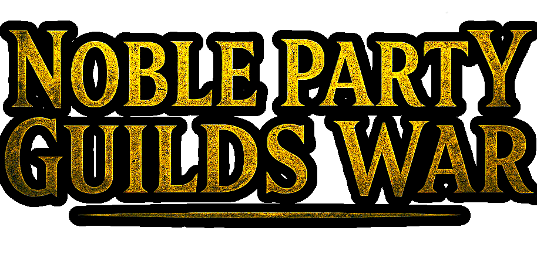
❮
Agorà non dorme mai.
È un intreccio di passi,
voci sovrapposte e promesse fatte a metà.
Tra tende logore e tavoli improvvisati, guerrieri di ogni tipo si aggirano
fingendo sicurezza, lucidando armi che hanno visto giorni migliori e
raccontando imprese leggermente più grandi della realtà.
C’è chi aspetta una chiamata, chi spera di essere notato,
chi giura di essere pronto a tutto ma inciampa nei propri stivali.
I Leader osservano, valutano, scelgono.
Qualcuno viene arruolato per il suo talento,
qualcun altro per pura insistenza.
Qui nascono compagnie improbabili,
alleanze azzardate e spedizioni che iniziano sempre
con grande convinzione.
Poi, da qualche parte, una guerra li aspetta davvero.
In questo luogo c'è il QuiviQuivi, il Centro di Scommesse
di Ifrid e tanto altro ancora.
Molti racconti di questo luogo sono ricordati nelle Chronicles
del Campionato.
Nella grande bacheca dell'Agorà, sono sempre presenti
annunci di ogni Mercenario per farsi reclutare
(o chiedere somma di denaro per reclutamento)
per la prossima Guerra.
Riportiamo qui gli annunci, presentando quindi
ogni Mercenario che ha
aderito a questo Campionato pieno di Guerre.
Quale Mercenario si unirà a quale Gilda per la prossima Guerra?
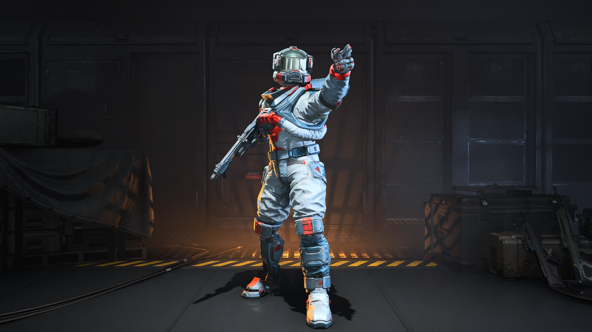
Dalla Cartellata sulla schiena a Karmic in un lontano passato, decise poi di prendere la via di una vita Zen. I suoi pugni sono ancora temuti da molti. "Morire con Valore? No, meglio con Bastione!"
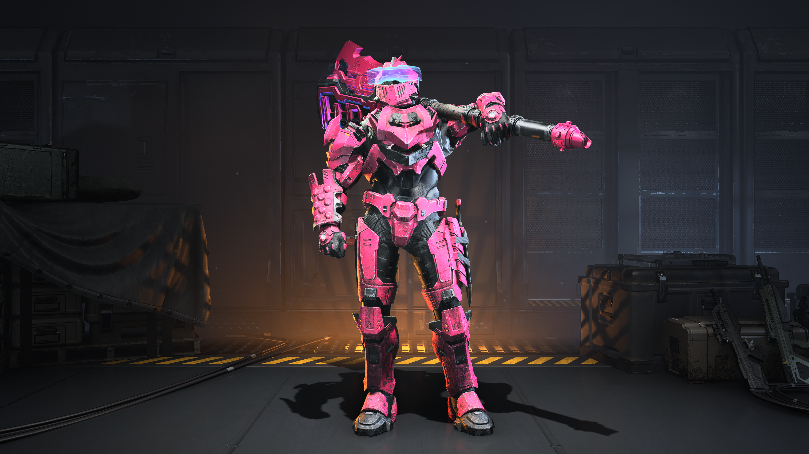
Il suo vero nome è stato dimenticato, oggi conosciuto come Glimpse of Nature. Quando non da sfogo alla sua ludopatia nel centro scommesse, attende nell'ombra: pronto per la prossima imboscata. "Attenti a ciò che non può essere visto"
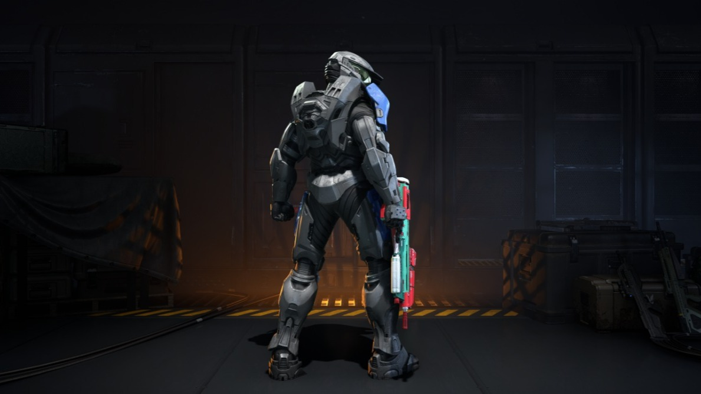
Sparito per un tempo immemore, si narra che abbia accompagnato Drius per innumerevoli sugosi combattimenti cicciobrufolosi. Oggi cerca di dimenticare il passato per un glorioso futuro. "Solo nella morte il dovere finisce"
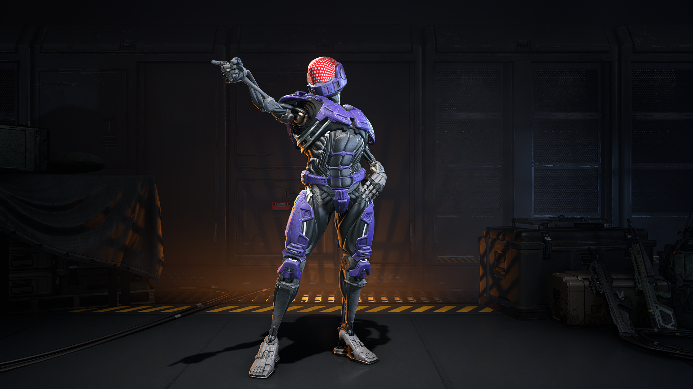
Con una famiglia numerosa da sfamare, accetta qualsiasi proposta di Guerra lavorando allo stesso tempo per la campagna marketing della Gilda Bastione. Tutto ad un passo dal burnout. "Meglio un giorno da leoni che mille da cento"
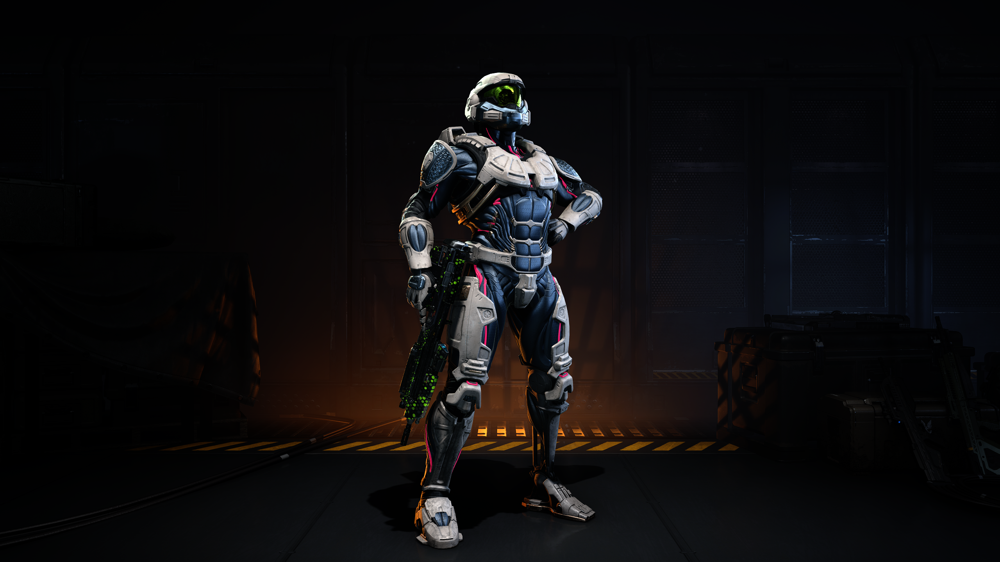
Il Mercenario di Cristallo, creato da Drius per questo Campionato. Dalle Urla Meridionali e con due mani sinistre, è già una Pop-Star in Agorà vantando di 25k viandanti che seguono in diretta le sue gesta. "Non porto i segni della battaglia, porto i resti di chi ha provato a fermarmi"
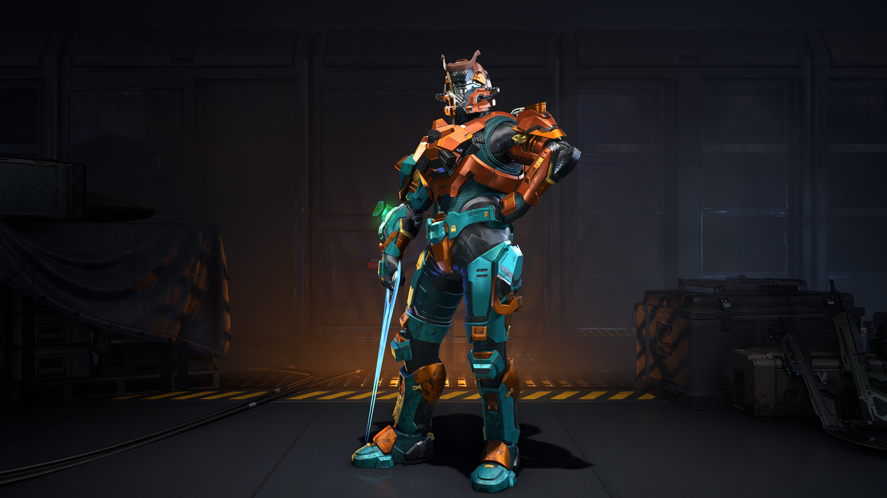
Nostalgico di Halo Reach, Pino's Carrot riemerge su Halo Infinite. Purtroppo ha letto le regole al contrario: è sempre a caccia del primo posto, ma nelle classifiche rovesciate. Da qui la sua fama di Reverse Champion. "Datemi un Mongoose e vi porterò alla vittoria, forse, probabilmente no"
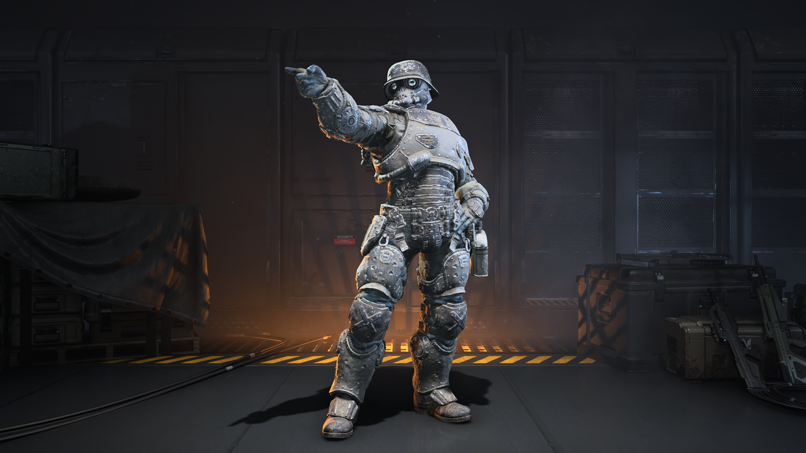
Dopo una lunga assenza, accolto in lacrime e con un inchino magistrale da Swine. Nel tempo libero deride le Armature altrui (attenti a cosa vestite). "Tutti bravi a fare doppie uccisioni, provateci voi ad auto infliggervi un headshot in autonomia, e pure di rimbalzo, pivelli"
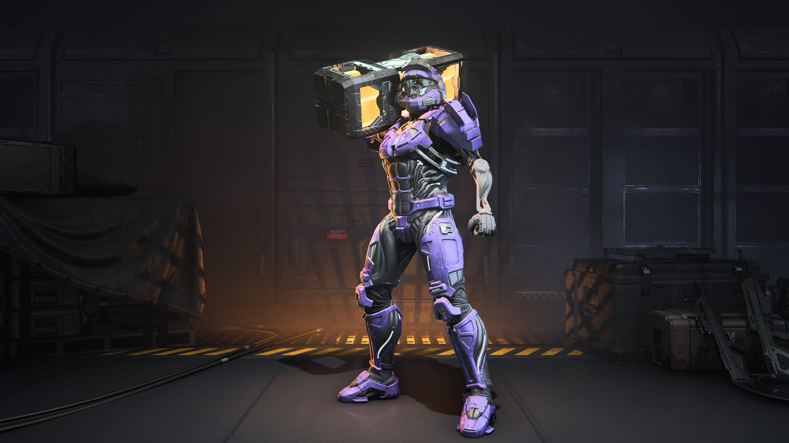
"State cercando un Mercenario valoroso che possa ribaltare le sorti della partita tramite le sue gesta? bene allora non faccio al caso vostro, io sono qui per puro intrattenimento. Sono Deferent Bobina Skate e sono un apostrofo rosa tra la parola Sensible e Swine"
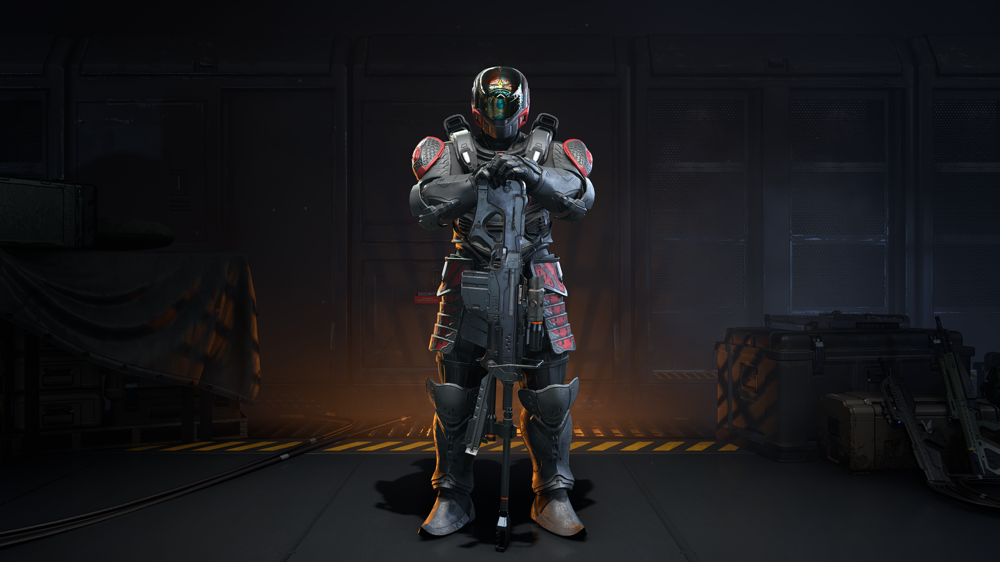
Fu nel lontano 2024 quando nacque la leggenda sul carro: The Iron Lanza. "Diciamo non sono il Mercenario più skillato a piedi. Ma potete chiedere alle palle di Kœlt cosa succede quando salgo sullo Scorpion: la merda evolve in diamanti"
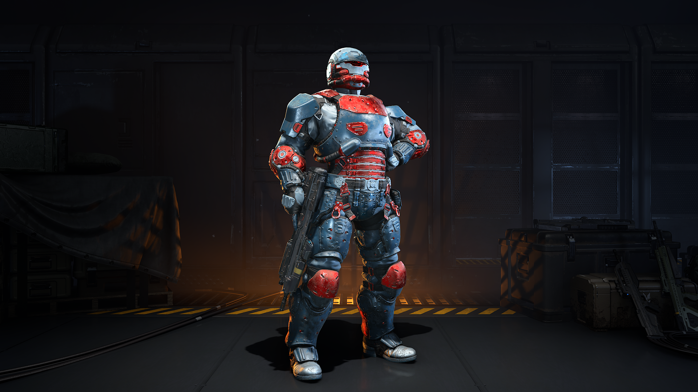
Da quando Aerostokes ha capito che il Campionato non è alcolico ma su Halo Infinite, cerca rifugio al QuiviQuivi tra feste, sbronze e inglese improvvisato. "Una volta Herb Brooks ha detto 'Great moments are born from great opportunity' "
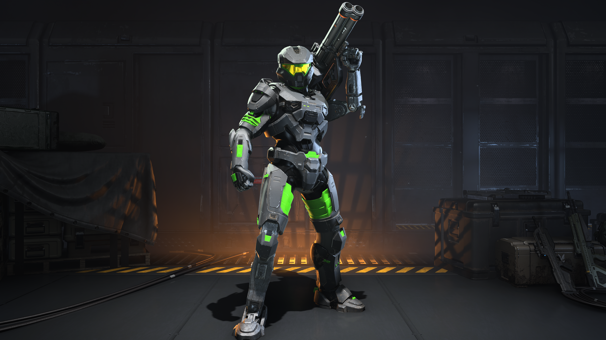
Essendo presidente della logistica alimentare di Agorà, ha vita lavorativa intensa soprattutto all'alba, che non permette perditempo: da qui le sue urla "Gnamo Gioca falla finita!". Colleziona relique Nintendare nel tempo libero. "It's me, Clavuss!"
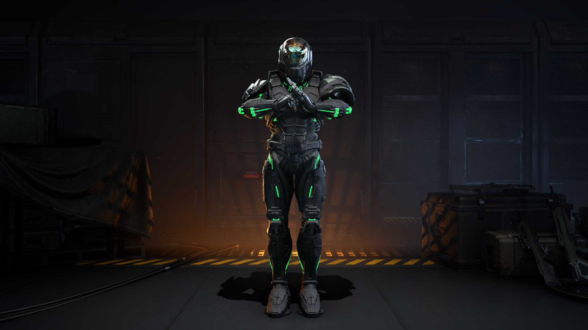
Armi e proiettili del Campionato gentilmente offerte dalle Khan Industries. "Inviato qui contro la mia volontà sotto il comando di Puffo. Sopravvivo solo grazie alla pazzia dei ragazzi: se mi vedete lanciare una granata a caso, non sto attaccando, sto solo segnalando la mia posizione ai soccorsi"
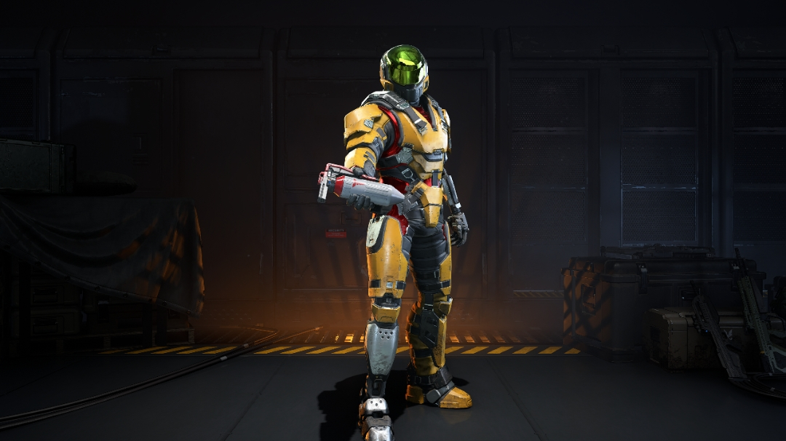
Dopo Halo CE, è rimasto intrappolato in un loop infinito a configurare il suo PC. Peccato che in campionato giochi sempre sulle postazioni degli altri. I suoi proiettili forse ti mancheranno, ma le sue frasi taglienti no. "Fall seven times, get up eight."
Quali sono le sue gesta? "e il suo motto?"

Gilda Ade, Gilda Aquila, Gilda Bastione, Gilda Cobra, Gilda Pericolo, Gilda Sciabola, Gilda Valchiria, Gilda Valore.

I Racconti di chi ha vissuto questo Campionato su Chronicles.

I vincitori di questo Campionato e informazioni sul punteggio sono su Awards.

Ispeziona i Punteggi del Campionato Scores.